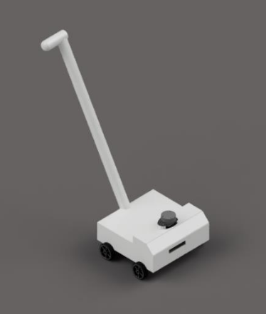

In our project, we set out to create a groundbreaking solution for assisting visually impaired individuals during their travels. Our objective was to go beyond the limitations of traditional canes and guide dogs, offering a smart, dynamic, and sensitive navigational aid. Central to our design was a focus on advanced obstacle detection and avoidance, ensuring both safety and efficiency for the user.
Leveraging the power of ROS (Robot Operating System), our approach involved a two-step process for obstacle management. Recognizing that not all objects detected are genuine obstacles, we first integrated computer vision to differentiate between potential barriers and harmless objects. This classification was crucial to avoid unnecessary diversions and conserve energy.
To complement this, we utilized ROS’s SLAM (Simultaneous Localization and Mapping) capabilities for precise distance measurement between the bot and identified obstacles. By employing this sophisticated system, we could guide users smoothly around real obstructions while ignoring irrelevant items.
Our system’s intelligence was housed in a microcomputer, chosen for its rapid data processing capabilities. This unit interfaced with an RGBD (Red Green Blue and Depth) camera, forming the core of our obstacle detection mechanism. The microcomputer’s directives were then executed through microcontrollers managing the motors, which gently directed the user towards the safest path.
In addition to this primary mechanism, we integrated extra safety features like an IMU (Inertial Measurement Unit) and piezoelectric sensors. These components were specifically included for fall detection, adding an extra layer of security for the user.
Throughout the development process, our team was driven by the vision of creating a reliable, affordable, and technologically advanced aid for the visually impaired. This project was not just about engineering a device; it was about enhancing the independence and safety of those who face daily navigational challenges.